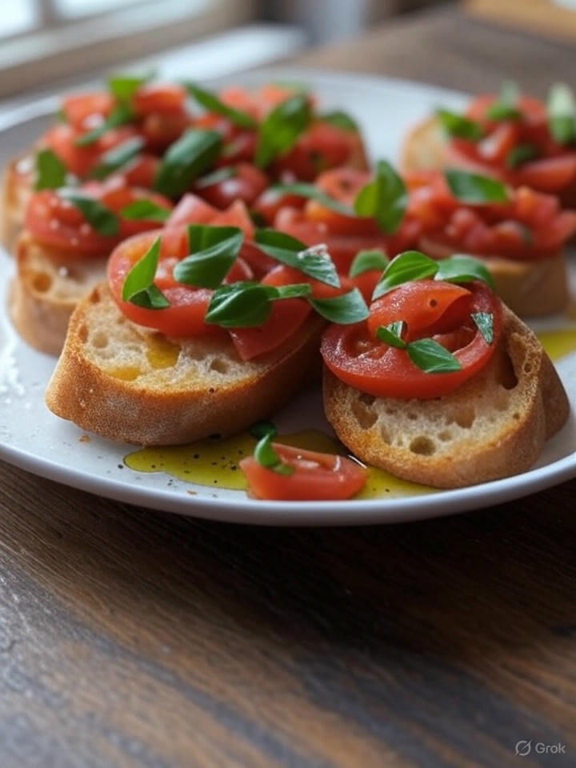

Home
Bruschetta Recipe

Description
A simple, quick, fresh appetizer or mid-day snack. Not many ingredients required. Prep time will be 15 - 20 mins. Bruschetta is fresh baguette/french bread piece cross-section with olive oil, after which you spread boursin cheese. Tomato and arugula rest on top with a champagne vinaigrette dressing. Finally, a balsamic glaze atop once the pieces are assembled. NOTE: picture above not representative of recipe below
Ingredients
- Baguette or french bread
- Several tomatoes, sliced or diced. [Cherry tomatoes will be more tedious]
- Boursin cheese
- Olive Oil
- Arugula or baby arugula
- Champagne vinaigrette
- Balsamic glaze
Steps
- Cut cross sections of bread
- Paint or drizzle olive oil on top of bread cross-sections
- Toast to your liking. AND while bread toasts do the following
- Slice or diced tomatoes. Place on a plate
- Scatter arugula on top of plate of tomatoes
- Spread champagne vinaigrette atop tomatoes/arugula to your liking
- Remove bread from toaster, SPREAD Boursin cheese on top
- Place tomatoes+arugula on top of bread
- Pour balsamic glaze on top to finish
- Final product from bottom to top = bread, olive oil, boursin cheese, tomatoes, arugula, champagne vinaigrette, balsamic glaze
- Add salt/pepper if you please. But I don't recommend